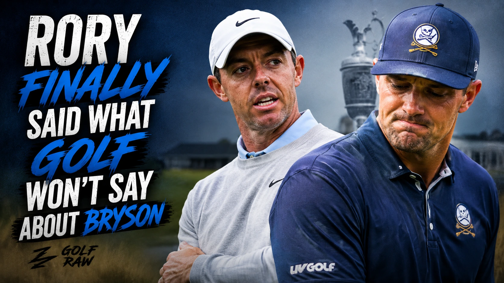

Quick Verdict: Rory McIlroy said Bryson DeChambeau “held the tournament hostage” after a two-shot penalty at The Open delayed the release of third-round tee times until roughly 11 p.m. McIlroy backed the ruling, then went for DeChambeau’s reaction—calling it “performative” and saying it was driven by attention. This was never really about two strokes. Not by Saturday. It was about one player refusing to let a bad ruling die quietly, and another player deciding he had watched enough.

What did Rory McIlroy say?
Rory McIlroy criticized Bryson DeChambeau's reaction to his rules penalty as performative and attention-seeking, stating that the late-night debate delayed the entire tournament.
Rory McIlroy was not trying to win a popularity contest when addressing reporters at Royal Birkdale. He stated openly that he is not particularly fond of DeChambeau, describing his public behavior as performative and attention-seeking. This represents a distinct departure from the standard sponsor-approved talking points top players typically offer during major championships.
His primary frustration centered on the operational delay. The rules review and subsequent discussions went on long after Friday's play concluded, which held back the release of the third-round tee times until nearly 11 p.m. McIlroy’s view is that a major championship should not be left in limbo because a single player cannot accept an official ruling.
Why did Bryson get penalised?
Bryson DeChambeau was assessed a two-stroke penalty under Rule 8.1 for inadvertently improving the conditions of his lie prior to executing his stroke.
The penalty occurred during the second round as Bryson DeChambeau played his second shot from the heavy rough on the fifth hole. R&A rules officials determined that DeChambeau had bent or moved growing natural objects in a manner that improved the area of his intended swing. Under the strict wording of Rule 8.1, players must take the least intrusive course of action when taking a stance, and they are not guaranteed a normal swing path when recovering from difficult lies.
Although he initially completed the hole for a bogey five, the post-round penalty converted his score to a triple-bogey seven. This changed his tournament standing from seven under to five under, a costly setback in the middle of a major championship.
| What happened | What it meant |
|---|---|
| DeChambeau played his second shot from heavy grass at the fifth hole. | He had to avoid altering conditions affecting the stroke. |
| The R&A said he improved the intended swing area inadvertently. | Intent did not erase the breach under the applicable rule. |
| His 5 became a 7. | The penalty cost two strokes and reshaped his place on the leaderboard. |
Was the R&A right?
Yes, the R&A's application of Rule 8.1 was technically correct, as the rules dictate that players cannot alter conditions affecting their stroke regardless of whether the action was intentional.
While the ruling felt harsh to casual viewers, it remained consistent with the strict guidelines of links play. Under Rule 8.1, players may take reasonable steps to reach their ball and take a stance, but they must choose the least intrusive method. They are not entitled to a normal backswing in deep fescue.
McIlroy noted that he watched the television coverage from the players' lounge and immediately felt the action warranted review. He stated there was no doubt DeChambeau improved his backswing area and that the two-stroke penalty was entirely justified. The strictness of golf rules means the result, rather than a player's intent, dictates the penalty at the Open Championship.
Why did the row drag on?
The controversy escalated because DeChambeau and his representatives engaged in prolonged discussions with officials at the fifth hole late into the evening.
After completing the round, DeChambeau returned to the fifth hole with rules officials to review the footage and discuss the decision. The extensive process delayed the official posting of the leaderboard and the release of the Saturday tee times. For McIlroy, this was where the situation went too far, as the operational delay impacted everyone involved in the tournament.
R&A Chief Executive Mark Darbon later described the infraction as clear-cut. While a player's frustration over a costly penalty is expected, the operational needs of the tournament must take priority. The delay turned a standard rules decision into a late-night standoff.
Why this hit differently
The confrontation highlights a deep philosophical division between McIlroy's traditional view of golf etiquette and DeChambeau's media-centric approach to the game.
The tension between the two stars has always been present under the surface. DeChambeau plays a high-profile, highly visible brand of golf, embracing cameras and public debates. McIlroy, conversely, adheres to a more traditional style where rulings are accepted within the ropes and left there.
McIlroy's comments were particularly sharp because they challenged the authenticity of DeChambeau's public persona. Labeling the reaction as performative suggests that the entire dispute was designed for the benefit of an audience, rather than being a simple disagreement over a rule.
The Raw Take
Bryson got a rotten break. Nobody needs to pretend a two-shot penalty in major-championship rough is painless or elegant.
But a bad break is not a license to freeze the whole tournament while you wrestle the rulebook under the lights. The R&A ruled. The score changed. That is golf at its most unforgiving.
Rory did not object to Bryson being angry. He objected to Bryson making anger the event. And for once, he did not wrap the truth in a polite little bow.